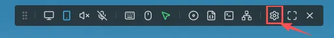
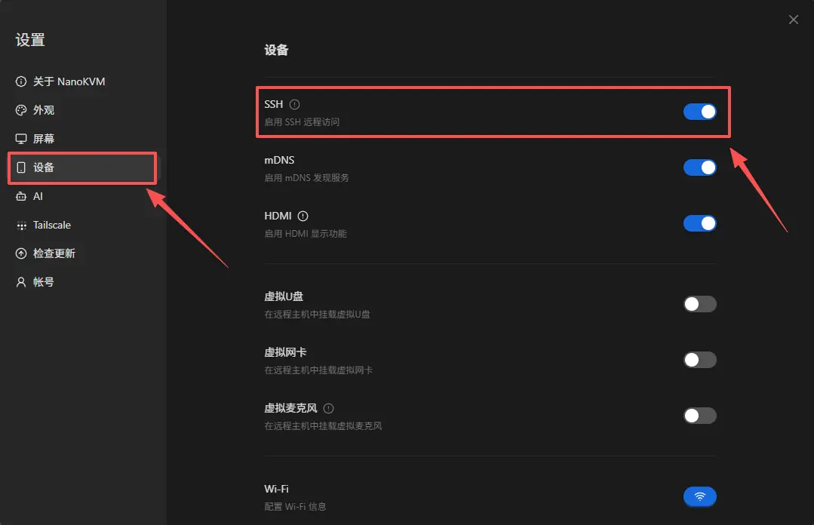
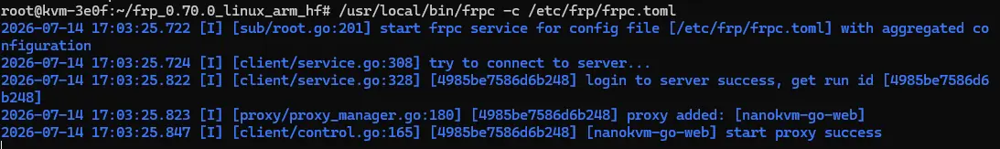

English
Englishfrp
Update history
| Date | Version | Author | Update content |
|---|---|---|---|
| 2026-07-14 | v0.2 | Liang Ziyue |
|
Configure frp Remote Access
frp is an intranet penetration tool. It can forward the NanoKVM Go service in a local network to a server with a public IP address. After configuration, you can remotely access NanoKVM Go through the public server even if the network where NanoKVM Go is located does not have a public IP address.
frp consists of two components:
frps: the server, running on a server with a public IP address;frpc: the client, running on NanoKVM Go.
Remote PC or phone
|
| Access https://public IP:8080
v
Public server (frps) <----- frpc active connection ----- NanoKVM Go
The NanoKVM Go web interface currently does not provide an FRP entry. You need to enable SSH in the web interface first, then install and configure
frpcmanually through SSH.
Exposing NanoKVM Go to the public Internet increases the risk of scanning, password guessing, and attacks. Set a strong password for NanoKVM Go first. The basic TCP example in this document forwards NanoKVM Go's local HTTPS service, but the device certificate is usually self-signed, so the browser may report that the certificate is not trusted. If you have a domain name, you can configure a trusted certificate for it. If you do not want to expose public ports, you can use a virtual networking solution such as Tailscale instead.
Preparation
Before you start, prepare:
- a Linux server with a public IPv4 address;
- a NanoKVM Go connected to the Internet;
- administrator privileges on both NanoKVM Go and the public server;
- permission to modify the cloud security group and the server firewall;
- an frp authentication token that is hard to guess.
This document uses the following example values:
| Item | Example | Usage |
|---|---|---|
| Public server IP | 203.0.113.10 |
Runs frps |
| frps communication port | 7000 |
Used by frpc to connect to frps |
| NanoKVM Go public access port | 8080 |
Used by the browser to access NanoKVM Go |
| NanoKVM Go web address | 127.0.0.1:443 |
Local HTTPS service forwarded by frpc |
| Token | replace_with_a_strong_token |
Authenticates frpc |
203.0.113.10 is an example address and cannot be used directly. Replace the public IP address, ports, and token in this document with your actual values.
Install frps on the Public Server
Download frp
Check the CPU architecture of the server:
uname -m
Open frp Releases, and select the Linux package that matches your server architecture. Common architecture mappings are:
uname -m output |
frp package architecture |
|---|---|
x86_64 |
linux_amd64 |
aarch64, arm64 |
linux_arm64 |
armv7l |
linux_arm_hf |
| Older ARM devices such as ARMv5 | linux_arm |
riscv64 |
linux_riscv64 |
This document uses frp 0.70.0 as an example. You can download it from the release page:
- frp 0.70.0 release page
- Linux AMD64 package
- Linux ARM64 package
- Linux ARMv7 hard-float package
- Linux RISC-V 64 package
Most cloud servers use the x86_64 architecture. If uname -m outputs x86_64, run the following commands to download and install frps:
wget https://github.com/fatedier/frp/releases/download/v0.70.0/frp_0.70.0_linux_amd64.tar.gz
tar -xzf frp_0.70.0_linux_amd64.tar.gz
cd frp_0.70.0_linux_amd64
sudo install -m 755 frps /usr/local/bin/frps
sudo install -m 755 frps /usr/local/bin/frps copies the frps program from the current directory to /usr/local/bin/frps, and sets its permission to 755. This means all users can execute it, while only the file owner can modify it.
If your server uses another architecture, download the matching package from the table above, and replace the package name and extracted directory in the commands with the actual names. The public server and NanoKVM Go should use the same frp version.
Verify that frps can run:
/usr/local/bin/frps --version
It is recommended to install the same frp version on the public server and NanoKVM Go to avoid configuration incompatibilities caused by version differences.
Create the frps configuration
Create the configuration directory:
sudo mkdir -p /etc/frp
Create /etc/frp/frps.toml:
bindPort = 7000
auth.method = "token"
auth.token = "replace_with_a_strong_token"
Replace auth.token with a randomly generated strong token. You can generate one on the public server with:
openssl rand -hex 32
The token in the frps and frpc configurations must be exactly the same. The token only authenticates frpc. It does not replace the NanoKVM Go login password, and it does not replace the HTTPS certificate used by the browser.
Start frps
Start it in the foreground first, so you can see the logs directly:
sudo /usr/local/bin/frps -c /etc/frp/frps.toml
If there is no error, press Ctrl+C to stop the test. Foreground mode works on all Linux systems, but frps stops when the terminal is closed. For long-term use, register it as a system service.
Check the init system
Run the following command to check the process used by PID 1:
ps -p 1 -o comm=
Choose the startup method according to the output:
| Example output | Startup method |
|---|---|
systemd |
Use systemd |
init, sysvinit, and /etc/init.d/ exists |
Use SysV init |
openrc-init |
Use OpenRC |
Whether systemd can be used depends on whether PID 1 is
systemd. Having thesystemctlcommand installed does not mean the current system was booted with systemd.
Start with systemd
Use this section only when ps -p 1 -o comm= outputs systemd.
Create /etc/systemd/system/frps.service:
[Unit]
Description=frp server
After=network-online.target
Wants=network-online.target
[Service]
Type=simple
ExecStart=/usr/local/bin/frps -c /etc/frp/frps.toml
Restart=on-failure
RestartSec=5s
[Install]
WantedBy=multi-user.target
Load the service and enable it on boot:
sudo systemctl daemon-reload
sudo systemctl enable --now frps
sudo systemctl status frps
If the status is active (running), frps has started. View live logs with:
sudo journalctl -u frps -f
Start with SysV init
If the system uses SysV init and the start-stop-daemon command exists, create /etc/init.d/frps:
#!/bin/sh
DAEMON=/usr/local/bin/frps
CONFIG=/etc/frp/frps.toml
PIDFILE=/var/run/frps.pid
case "$1" in
start)
if [ -f "$PIDFILE" ] && kill -0 "$(cat "$PIDFILE")" 2>/dev/null; then
echo "frps is already running"
exit 0
fi
echo "Starting frps"
start-stop-daemon --start --background --make-pidfile \
--pidfile "$PIDFILE" --exec "$DAEMON" -- -c "$CONFIG"
;;
stop)
echo "Stopping frps"
start-stop-daemon --stop --pidfile "$PIDFILE" --retry TERM/5/KILL/5
rm -f "$PIDFILE"
;;
restart)
"$0" stop
"$0" start
;;
status)
if [ -f "$PIDFILE" ] && kill -0 "$(cat "$PIDFILE")" 2>/dev/null; then
echo "frps is running"
else
echo "frps is not running"
exit 1
fi
;;
*)
echo "Usage: $0 {start|stop|restart|status}"
exit 1
;;
esac
Make the script executable:
sudo chmod +x /etc/init.d/frps
On Debian, Ubuntu, and other SysV init systems that use update-rc.d, enable the service on boot and start it:
sudo update-rc.d frps defaults
sudo service frps start
sudo service frps status
If the system does not have update-rc.d, use the SysV init service management command provided by your distribution.
Systems without systemd
If you see the following error:
System has not been booted with systemd as init system (PID 1). Can't operate.
Failed to connect to bus: Host is down
The current environment was not booted with systemd, so do not continue using systemctl. You can test frps in the foreground first:
sudo /usr/local/bin/frps -c /etc/frp/frps.toml
For long-term use, add a service configuration according to the init system actually used by the distribution.
Open public server ports
Allow the following ports in the cloud security group and the server firewall:
7000/tcp: used byfrpcon NanoKVM Go to connect tofrps;8080/tcp: used by remote browsers to access NanoKVM Go.
Different Linux distributions may use different firewall tools. Check first:
command -v ufw
command -v firewall-cmd
Choose the corresponding section according to the command output. Do not run commands for a firewall tool that is not installed.
Use UFW
If command -v ufw outputs the UFW path, run:
sudo ufw allow 7000/tcp
sudo ufw allow 8080/tcp
sudo ufw status
If the terminal reports ufw: command not found, UFW is not installed on the current system. UFW is not required for running frps. Continue checking whether the system uses firewalld, another firewall, or only the cloud security group.
Use firewalld
If command -v firewall-cmd outputs the firewalld command path, run:
sudo firewall-cmd --permanent --add-port=7000/tcp
sudo firewall-cmd --permanent --add-port=8080/tcp
sudo firewall-cmd --reload
sudo firewall-cmd --list-ports
Use a cloud security group
Alibaba Cloud, Huawei Cloud, Tencent Cloud, AWS, and other cloud providers usually provide a security group that is independent of the Linux system. Even if UFW or firewalld is not installed inside the server, you must add inbound rules in the cloud server console:
| Protocol | Port | Source |
|---|---|---|
| TCP | 7000 |
Public IP of the network where NanoKVM Go is located. If it cannot be fixed, you can temporarily allow any source for testing. |
| TCP | 8080 |
Public IP that needs to access NanoKVM Go. If it cannot be fixed, you can temporarily allow any source for testing. |
After testing, restrict the source range to the actual IPs you need. Do not keep these ports open to the entire Internet for a long time.
Confirm that frps is listening on port 7000:
sudo ss -lntp | grep ':7000'
You can also confirm whether the remote access port is already listening:
sudo ss -lntp | grep ':8080'
Port
8080appears only afterfrpcon NanoKVM Go connects successfully and registers the proxy.
Enable SSH in the NanoKVM Go Web Interface
The NanoKVM Go web interface does not provide an FRP entry, so you need to enable SSH first, then install frpc from the command line.
Log in to NanoKVM Go
- Open the local network address of NanoKVM Go in a browser;
- Enter the username and password to log in to the web console;
- Confirm the current local network IP address of NanoKVM Go.
Open SSH settings
- Open the NanoKVM Go settings page;

- Go to the settings item that contains the SSH switch, and enable SSH;

Log in through SSH
Open a terminal on a computer in the same local network as NanoKVM Go, and log in through SSH:
ssh <SSH username>@<NanoKVM-Go local IP>
Example: ssh root@192.168.0.225
On the first connection, the terminal asks whether to trust the device fingerprint. After confirming that the IP address is correct, enter
yes, then enter the SSH password. The username isroot, and the password issipeed.
Install frpc on NanoKVM Go
Run the following commands in the NanoKVM Go SSH terminal.
Confirm the system architecture
Run:
uname -m
The output of uname -m on a real NanoKVM Go device is:
armv7l
Therefore, use the linux_arm_hf package of frp. This package is built for ARMv7 hard-float environments. Do not download linux_arm64.
Download and install frpc
The /tmp directory on NanoKVM Go is usually mounted as an in-memory tmpfs and has limited space. Download the package to /root on the root filesystem instead.
Run the following commands to download and install frpc:
cd /root
wget https://github.com/fatedier/frp/releases/download/v0.70.0/frp_0.70.0_linux_arm_hf.tar.gz
tar -xzf frp_0.70.0_linux_arm_hf.tar.gz
cd frp_0.70.0_linux_arm_hf
mkdir -p /usr/local/bin
cp frpc /usr/local/bin/frpc
chmod +x /usr/local/bin/frpc
If the download or extraction fails, confirm that NanoKVM Go can access GitHub, and check whether the version number and file name match the Releases page.
Verify the installation:
/usr/local/bin/frpc --version
If NanoKVM Go cannot access GitHub directly, download the package on your computer first, then upload it to /root on the device with scp:
scp frp_0.70.0_linux_arm_hf.tar.gz <SSH username>@<NanoKVM-Go local IP>:/root/
Create the frpc configuration
Create the configuration directory:
mkdir -p /etc/frp
Create /etc/frp/frpc.toml:
serverAddr = "203.0.113.10"
serverPort = 7000
auth.method = "token"
auth.token = "replace_with_a_strong_token"
[[proxies]]
name = "nanokvm-go-web"
type = "tcp"
localIP = "127.0.0.1"
localPort = 443
remotePort = 8080
Modify the following parameters:
| Parameter | What to change |
|---|---|
serverAddr |
Actual IP address or domain name of the public server |
serverPort |
bindPort of frps, 7000 in this document |
auth.token |
The same token as in frps.toml |
localPort |
Actual NanoKVM Go web service port. This document uses HTTPS port 443 |
remotePort |
Public access port, 8080 in this document |
Check whether the local web service is accessible:
wget --no-check-certificate -S -O /dev/null https://127.0.0.1:443
The HTTP port of NanoKVM Go may redirect to HTTPS. If directly accessing http://127.0.0.1:80 returns 307 Temporary Redirect and redirects to https://127.0.0.1/, this is normal. Because the device certificate is usually not a publicly trusted certificate, add --no-check-certificate when testing with wget.
If the connection is refused, confirm the actual NanoKVM Go web service port, then modify localPort.
Test the frpc connection
Start frpc in the foreground:
/usr/local/bin/frpc -c /etc/frp/frpc.toml
If the logs show login to server success and start proxy success, frpc has connected to frps and registered the proxy.
Keep this terminal running, and open the following address in a browser from an external network:
https://203.0.113.10:8080
Replace the example IP address with the actual IP address of your public server. On first access, the browser may report that the certificate is not trusted. After confirming that you are accessing your own server, continue for testing. If the NanoKVM Go login page opens, the TCP forwarding configuration is correct. After testing, return to the SSH terminal and press Ctrl+C to stop frpc.

Enable frpc on boot
NanoKVM Go uses systemd to manage system services. Create /etc/systemd/system/frpc.service:
[Unit]
Description=frp client for NanoKVM Go
After=network-online.target
Wants=network-online.target
[Service]
Type=simple
ExecStart=/usr/local/bin/frpc -c /etc/frp/frpc.toml
Restart=always
RestartSec=5s
[Install]
WantedBy=multi-user.target
Load the service and enable it on boot:
systemctl daemon-reload
systemctl enable --now frpc
systemctl status frpc
View live logs:
journalctl -u frpc -f
After rebooting NanoKVM Go, run systemctl status frpc again to confirm that the service starts automatically and reconnects to frps.
Access NanoKVM Go from an External Network
To confirm that the traffic really goes through the public server, switch your computer or phone to another network, such as a mobile hotspot or mobile data network, then:
- Open
https://<public server IP>:8080in a browser; - Log in with the NanoKVM Go username and password;
- Test the remote display, keyboard, mouse, and power control;
- Refresh the page, and confirm that video and control features still work.
The TCP proxy forwards HTTPS and WebSocket connections as-is, so WebSocket usually does not require extra configuration. If the page opens but video or control functions are abnormal, check the browser developer tools, frpc logs, and frps logs.
Configure a Domain Name and HTTPS (Optional)
The basic example https://<public IP>:8080 uses the certificate provided by NanoKVM Go itself, so the browser may report that the certificate is not trusted. If you have an available domain name, you can point it to the frps server and use Nginx or Caddy to provide a trusted HTTPS reverse proxy.
For example, with Nginx, let Nginx listen on 443, then forward requests to port 8080 exposed by frp on the server itself:
server {
listen 443 ssl;
server_name kvm.example.com;
ssl_certificate /path/to/fullchain.pem;
ssl_certificate_key /path/to/privkey.pem;
location / {
proxy_pass https://127.0.0.1:8080;
proxy_http_version 1.1;
proxy_ssl_verify off;
proxy_set_header Host $host;
proxy_set_header X-Real-IP $remote_addr;
proxy_set_header X-Forwarded-For $proxy_add_x_forwarded_for;
proxy_set_header X-Forwarded-Proto $scheme;
proxy_set_header Upgrade $http_upgrade;
proxy_set_header Connection "upgrade";
proxy_read_timeout 3600s;
}
}
The overall steps are:
- Point the domain A record to the public IP address of the
frpsserver; - Install Nginx or Caddy on the server;
- Issue a TLS certificate for the domain;
- Reverse proxy HTTPS requests to
https://127.0.0.1:8080; - Allow
443/tcpin the security group and firewall; - After confirming that
https://kvm.example.comworks, close public inbound access to8080/tcp.
After configuring HTTPS, use the cloud security group and server firewall to deny public inbound traffic to 8080/tcp, and allow only the local Nginx process on the server to access that port. Do not keep the HTTP test port publicly exposed after HTTPS is configured.
FAQ
frpc cannot connect to frps
Check the following:
- whether
serverAddrandserverPortare correct; - whether
frpsisactive (running); - whether
7000/tcpis allowed in the cloud security group and server firewall; - whether the tokens in
frpsandfrpcare exactly the same; - whether the frp versions on the public server and NanoKVM Go are compatible;
- whether NanoKVM Go can access the Internet and the public server.
You can test port connectivity on NanoKVM Go:
nc -vz <public server IP> 7000
If nc is not available, observe the frpc connection logs directly.
frpc is connected, but the public port cannot be accessed
Check:
- whether
remotePortis occupied by another program or another frp proxy; - whether
8080/tcpis allowed in the cloud security group and server firewall; - whether the
frpclog shows that the proxy started successfully; - whether the
frpslog containsnanokvm-go-web; - whether the browser is using
https://, nothttp://.
Confirm on the public server whether the port is listening:
sudo ss -lntp | grep ':8080'
The page cannot be opened or returns connection refused
Run the following command on NanoKVM Go:
wget --no-check-certificate -S -O /dev/null https://127.0.0.1:443
If local access also fails, localIP or localPort is incorrect, or the NanoKVM Go web service is not running.
Local test reports that the certificate is not trusted
If running wget -S -O /dev/null http://127.0.0.1:80 returns 307 Temporary Redirect and redirects to https://127.0.0.1/, NanoKVM Go is automatically using HTTPS. The following certificate errors are usually normal:
ERROR: The certificate of '127.0.0.1' is not trusted.
ERROR: The certificate's owner does not match hostname '127.0.0.1'
This happens because the NanoKVM Go certificate is not a publicly trusted certificate issued for 127.0.0.1. To test the local HTTPS service, use:
wget --no-check-certificate -S -O /dev/null https://127.0.0.1:443
The frpc configuration should also forward localPort = 443.
The page opens, but video or control features are abnormal
Check:
- whether the browser developer tools show WebSocket connection errors;
- whether
frpcandfrpsdisconnect or reconnect frequently; - whether Nginx or Caddy forwards WebSocket Upgrade requests correctly;
- whether an HTTPS page loads HTTP resources;
- whether the public server bandwidth and the uplink bandwidth of the NanoKVM Go network are sufficient.
frpc does not start automatically after reboot
Run the following commands on NanoKVM Go:
systemctl status frpc
journalctl -u frpc -b
Check whether the service is enabled, whether the configuration file path is correct, and whether frpc can connect to frps after the network is ready.
Disable frp
Temporarily disable
If you only want to stop using frp temporarily and may use it again later, stop the service and disable auto-start while keeping the program and configuration files.
Stop and disable frpc on NanoKVM Go:
systemctl disable --now frpc
If the public server uses systemd, stop and disable frps:
sudo systemctl disable --now frps
If the public server uses SysV init, stop frps and remove it from auto-start:
sudo service frps stop
sudo update-rc.d -f frps remove
To restore the systemd service on NanoKVM Go, run:
systemctl enable --now frpc
To restore the systemd service on the public server, run:
sudo systemctl enable --now frps
To restore the SysV init service on the public server, run:
sudo update-rc.d frps defaults
sudo service frps start
Only run the commands that match the current init system. If the public server uses another service manager, use the corresponding stop and disable commands.
Completely uninstall
frp was installed by manually copying binaries, so it is not managed by package managers such as apt or dnf. To completely uninstall it, manually delete the service, program, and configuration files.
On NanoKVM Go, stop frpc and remove the systemd service file:
systemctl disable --now frpc
rm -f /etc/systemd/system/frpc.service
systemctl daemon-reload
Then delete the frpc program and configuration on NanoKVM Go:
rm -f /usr/local/bin/frpc
rm -f /etc/frp/frpc.toml
rmdir /etc/frp 2>/dev/null || true
Delete the package and extracted directory created during installation on NanoKVM Go:
rm -f /root/frp_0.70.0_linux_arm_hf.tar.gz
rm -rf /root/frp_0.70.0_linux_arm_hf
If you downloaded another version or architecture, replace the file names with the actual names.
If the public server uses systemd, remove the frps service first:
sudo systemctl disable --now frps
sudo rm -f /etc/systemd/system/frps.service
sudo systemctl daemon-reload
If the public server uses SysV init, remove the frps service first:
sudo service frps stop
sudo update-rc.d -f frps remove
sudo rm -f /etc/init.d/frps
After cleaning up the corresponding service, delete the frps program and configuration:
sudo rm -f /usr/local/bin/frps
sudo rm -f /etc/frp/frps.toml
sudo rmdir /etc/frp 2>/dev/null || true
The frp package and extracted directory on the public server are located in the directory where you ran the download commands. After confirming the directory and file names, you can delete them.
Clean up firewall and other configuration
If UFW was installed and used, delete the allow rules added in this document:
sudo ufw delete allow 7000/tcp
sudo ufw delete allow 8080/tcp
If firewalld was installed and used, run:
sudo firewall-cmd --permanent --remove-port=7000/tcp
sudo firewall-cmd --permanent --remove-port=8080/tcp
sudo firewall-cmd --reload
Finally, check and clean up:
7000/tcp,8080/tcp, and other frp ports in the cloud security group;- Nginx or Caddy configuration created specifically for NanoKVM Go;
- TLS certificates that are no longer used;
- DNS records that are no longer used.
If the corresponding firewall command does not exist, skip that group of commands. If a port, reverse proxy, or certificate is still used by another service, do not delete the corresponding configuration directly.
Security Recommendations
- Set a separate strong password for NanoKVM Go;
- Use a randomly generated strong token, and do not use the example value in this document;
- Do not expose the frps Dashboard to the public Internet;
- Open only the ports that are actually needed, and restrict source IPs through the firewall whenever possible;
- If you have a domain name, you can configure a trusted HTTPS reverse proxy;
- Regularly update NanoKVM Go, frp, and the public server system;
- Regularly check
frpc,frps, and reverse proxy logs; - Stop the service and close public ports immediately when you no longer use it.